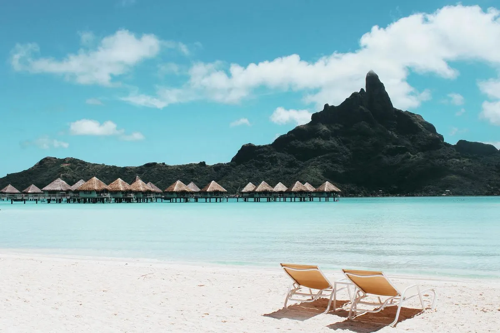
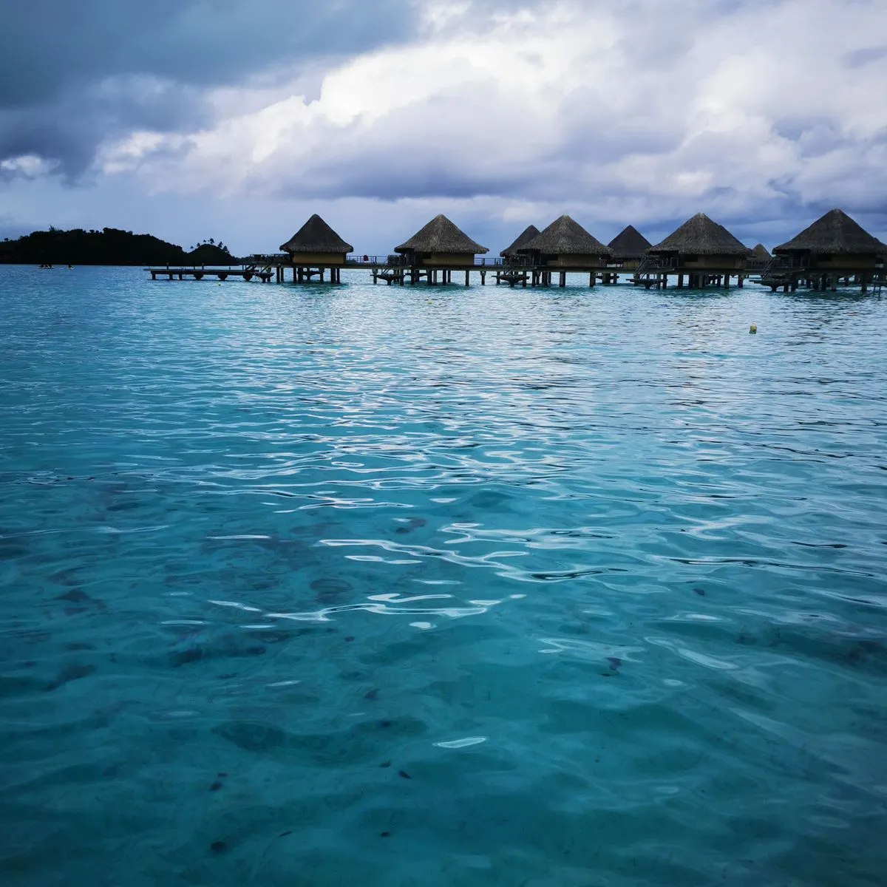
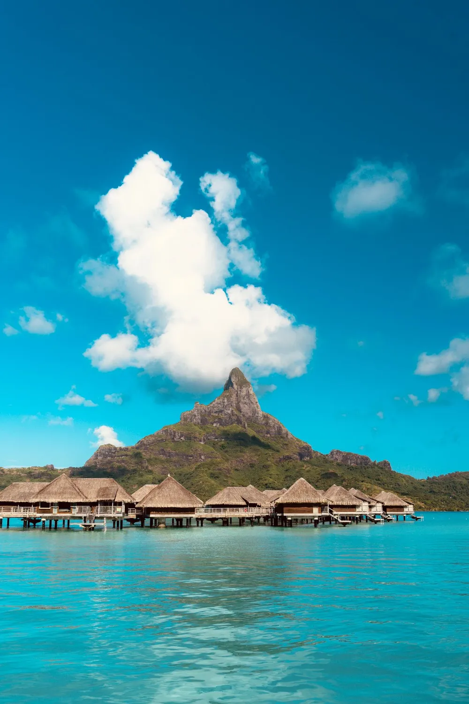

A joia cristalina do Pacífico Sul.
A silhueta verde e aguçada do Monte Otemanu, envolta por um colar de atóis azuis, é pra muitos a própria definição de lua de mel perfeita. A ilha vive de bangalôs sobre a água, com poucas unidades por resort, então antecedência importa tanto quanto a escolha certa de propriedade. É nisso que entra a nossa curadoria.
Uma lagoa morna, de infinitos tons cianos, em cujas águas descansam propriedades magistrais projetadas para a desconexão do casal. O padrão polinésio de receber convida o viajante a simplesmente 'ser'.
Fomos além ao indicar suites presidenciais overwater. A água atua como piso de vidro orgânico e tapete musical noturno. O acesso se dá via deck privado, permitindo natação ao simples bater de suas pestanas.
Cada manhã um florido bote polinésio rasga o silêncio para depositar pães crujiences, frutas exóticas vibrantes e café preto diretamente na piscina do deck. Uma herança cultural local unida ao mais alto requinte da pâtisserie.
A excelência taitiana brilha forte nos tartares e carpaccios divirtidamente imersos em leite de côco e limão. Experimente o jantar temático de fogos polinesos na areia exclusiva de um motu privado, sem a partilha com o público externo.
Vestir a máscara e interagir calmamente com a fauna estonteante colorida na zona dos corais - com chances claras de partilhar rota com arraias amigáveis - comanda o apelo aventuroso dócil da lagoa de Bora Bora.


